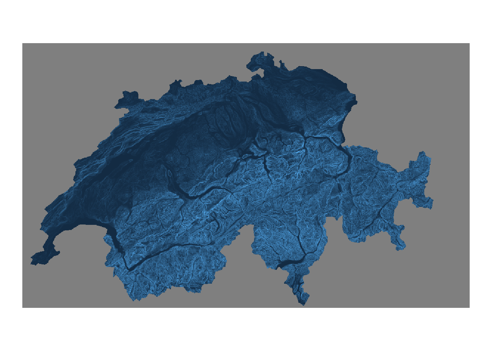

The terrain function in the terra package for R is used to compute various terrain characteristics from elevation data. It is based on Raster data (Input). For every pixel there is a height stored in the dataset. They are called Elevation Models. Based on this data, different other Variables can be calculated. The output consists of Raster Data too.
First we need to grab an elevation model. The geodata model (stored in X1) has a low resolution. The elevation Model of SwissTopo (stored in x2) on the other hand has a rather high resolution. The calcuclations based on larger data lead to exponentially higher calculation times when processed.
class : SpatRaster
dimensions : 9121, 15401, 1 (nrow, ncol, nlyr)
resolution : 25, 25 (x, y)
extent : 479987.5, 865012.5, 73987.5, 302012.5 (xmin, xmax, ymin, ymax)
coord. ref. : CH1903 / LV03 (EPSG:21781)
source(s) : memory
varname : dhm25_grid_raster
name : dhm25_grid_raster
min value : 193
max value : 4629
We see the significant difference in dimensions between x1 which returns a small SpatRaster (few dimensions) and thus cannot be enlarged significantly and a large x2 which has significantly more dimensions but slows down the rendering process too much. The SpatRaster has to be resampled.
The terra::aggregate function for SpatRaster objects reduces the resolution of a raster by grouping cells to create larger ones. Here’s how it works and its key parameters:
2.1 Functionality
Combines rectangular groups of cells into larger cells
Computes new cell values using a user-specified function
And thus reduces resolution (increases cell size)
2.2 Key Parameters
x: The input SpatRaster object
fact: Aggregation factor, specifying how many cells to combine
Single integer: Same factor for both directions
Two integers: Different factors for horizontal and vertical directions
Three integers: Also aggregates over layers
fun: Function used to calculate new cell values
Can be a custom function or named function like “mean”, “max”, “min”, “sum”, etc.
cores: Number of CPU cores to use for parallel processing
filename: Output file name for saving the result
overwrite: Boolean to allow overwriting existing files
Using a more sensible color palette the elevation model looks like this.
NoteGrayscale Heights no Colors
Note that there is onlyblack and white color indicating different heights of each pixel but no colors yet.
3 Further Steps to Create Beautiful Background Map
3.1 Add Hypsometric Tint
Hypsometric tinting (also known as layer tinting or elevation tinting) is a cartographic technique used to visually represent terrain elevation by applying different shades or colors to specific elevation ranges on a map. This helps in easily distinguishing different altitude levels. Typically, lower elevations are shaded in greens, mid-elevations in yellows or browns, and high elevations in grays or whites, simulating the natural progression of terrain from lowlands to mountains.
NoteTint but no Shades
Please note that there are no shades in the map for now, just colors referring to specific heights of the terrain. The “value” refers to the height of the respective pixels in metres.
The slope indicates how steep the pixel is (from flat to vertical). The Slope of SpatRaster pixels is calculated using the 4 or 8 (neighbors = c(4,8)) neighboring fields. The result is a SpatRaster with a slope for every pixel expressed in degrees.
\(2/pi (radian) = 360°(degrees)\)
slope <-terrain(x, "slope", unit ="radians")slope
class : SpatRaster
dimensions : 1141, 1926, 1 (nrow, ncol, nlyr)
resolution : 200, 200 (x, y)
extent : 479987.5, 865187.5, 73812.5, 302012.5 (xmin, xmax, ymin, ymax)
coord. ref. : CH1903 / LV03 (EPSG:21781)
source(s) : memory
name : slope
min value : 0.000000
max value : 1.180217
ggplot(slope) +geom_spatraster(data = slope,aes(fill = slope),show.legend = F ) +theme_void()

The (default) blue color is disturbing and shall be replaced by black and white.
The aspect of a pixel determines the direction to which a pixel is oriented (e.g. North). The Slope of SpatRaster pixels is also (as for Slope) calculated using the 4 or 8 (neighbors = c(4,8)) neighboring fields. If slope = 0, aspect is set to 0.5/*pi radians (or 90 degrees if unit=“degrees”) since a perfectly straight pixel does not have an orientation expressed in degrees.
aspect <-terrain(x, "aspect", unit ="radians")aspect
class : SpatRaster
dimensions : 1141, 1926, 1 (nrow, ncol, nlyr)
resolution : 200, 200 (x, y)
extent : 479987.5, 865187.5, 73812.5, 302012.5 (xmin, xmax, ymin, ymax)
coord. ref. : CH1903 / LV03 (EPSG:21781)
source(s) : memory
name : aspect
min value : 0.000000
max value : 6.283185
The following outputs (Index, flowdir etc.) are outputs of calculations on a SpatRaster but cannot be used as inputs for hillshade calculations (Section 4).
3.4 Topographic Position Index (TPI)
Measures the relative position of a location in the landscape. It compares the elevation of each cell to the mean elevation of its surrounding cells. Positive TPI values indicate ridges or hilltops. Negative TPI values indicate valleys or depressions. Values near zero indicate flat or mid-slope areas.
3.5 Terrain Ruggedness Index (TRI)
Quantifies the ruggedness of the terrain. Calculation: Sum of the absolute differences between the elevation of a cell and the elevation of its eight surrounding cells. Interpretation: Higher TRI values indicate more rugged terrain, while lower values indicate smoother terrain.
3.6 Roughness
Measures the variability in elevation within a cell’s neighborhood. Difference between the maximum and minimum elevation values within the neighborhood of a cell. Interpretation: Higher roughness values indicate more variable terrain, while lower values indicate more uniform terrain.
3.7 Flow Direction (flowdir)
Determines the direction water would flow out of each cell. Calculation: Encoded as powers of 2, indicating the direction of the steepest descent from each cell. Interpretation: Helps in hydrological modeling to understand water movement across the landscape.
4 Calculating Hillshade
Based on the calculations executed thus far, the hillshade can be calculated. Specifically slope and angle are required. The other values that can be calculated (TPI, TRI etc.) cannot be used as input variables for the shade command. In addition to said values the
hill <-shade(slope, aspect, 40, 270)hill
class : SpatRaster
dimensions : 1141, 1926, 1 (nrow, ncol, nlyr)
resolution : 200, 200 (x, y)
extent : 479987.5, 865187.5, 73812.5, 302012.5 (xmin, xmax, ymin, ymax)
coord. ref. : CH1903 / LV03 (EPSG:21781)
source(s) : memory
name : hillshade
min value : -0.3726986
max value : 0.9999841
5 Get and Combine Rivers and Lakes into one SpatVector
#|# *** Combine river data ***rivers <-rbind(bfs_get_base_maps(geom ="flus", type ="", category ="11" ), # Main riversbfs_get_base_maps(geom ="flus", type ="", category ="22" ), # Secondary riversbfs_get_base_maps(geom ="flus", type ="", category ="33" ), # Tertiary riversbfs_get_base_maps(geom ="flus", type ="", category ="44" ) # Quaternary rivers)# *** Combine lake data ***lakes <-bfs_get_base_maps(geom ="seen",category ="1", # Large lakesmost_recent =TRUE,format ="shp") |>vect() |> tidyterra::bind_spat_rows(vect(bfs_get_base_maps(geom ="seen",category ="2", # Small lakesmost_recent =TRUE,format ="shp" ) ) )# *** Get canton boundaries ***cantons <-bfs_get_base_maps(geom ="kant",category ="gf",type ="Poly",date =NULL,most_recent =TRUE,format ="shp") |>vect()# Create the mapggplot() +geom_spatvector(data = rivers,col ="lightblue",fill ="lightblue" ) +geom_spatvector(data = lakes,col ="lightblue",fill ="lightblue" ) +geom_spatvector(data = cantons,fill =NA,col ="red" ) +theme_void()
This goes to show what is possible in terms of political entities. There are the Cantons in “brown” and the communes in orange. District borders are available too if need be.
6 Comparison of terra::rbind() and tidyterra::bind_spat_rows()
Feature
terra::rbind()
tidyterra::bind_spat_rows()
Object types
Primarily SpatVector
SpatVector, sf/sfc, data frames
Column handling
Requires matching column names
Matches by name, fills missing with NA
CRS handling
Manual reprojection needed
Automatic reprojection to first element’s CRS
Identifier column
Not available
Optional .id parameter
Empty geometry handling
Not supported
Can add empty geometries to data frames
List input
Not supported
Supports lists, including named lists
Flexibility
Less flexible
More flexible with mixed data types
TipTidyterra where Possible
The tidyterra package is designed to enhance the usability of terra objects by integrating tidyverse methods, making it more intuitive for users familiar with data manipulation in R. In contrast, terra::rbind is more performance-oriented, focusing on efficiency when handling large datasets but lacking the user-friendly syntax that tidyterra offers. Therefore, I prefer using tidyterra whenever possible due to its seamless integration with the tidyverse framework and ease of use for spatial data manipulation.
Warning in grid.Call(C_stringMetric, as.graphicsAnnot(x$label)):
Zeichensatzfamilie in der Windows Zeichensatzdatenbank nicht gefunden
Warning in grid.Call(C_stringMetric, as.graphicsAnnot(x$label)):
Zeichensatzfamilie in der Windows Zeichensatzdatenbank nicht gefunden
Warning in grid.Call(C_textBounds, as.graphicsAnnot(x$label), x$x, x$y, :
Zeichensatzfamilie in der Windows Zeichensatzdatenbank nicht gefunden
Warning in grid.Call(C_textBounds, as.graphicsAnnot(x$label), x$x, x$y, :
Zeichensatzfamilie in der Windows Zeichensatzdatenbank nicht gefunden
Warning in grid.Call.graphics(C_text, as.graphicsAnnot(x$label), x$x, x$y, :
Zeichensatzfamilie in der Windows Zeichensatzdatenbank nicht gefunden
Warning in grid.Call.graphics(C_text, as.graphicsAnnot(x$label), x$x, x$y, :
Zeichensatzfamilie in der Windows Zeichensatzdatenbank nicht gefunden